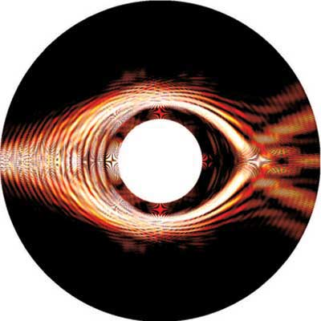

Greet Gauri Bharadwaj!
I am A.C.C.E.S.S. online private assistant of Jayant here are the answers of all your questions he told me!
The waves in this image are the electromagnetic waves of light which we all saay as the photons of light, an visible object is possible due to that phenomenon in the above image!
But if we are able to bend the light like herre in the image then it would be possible for that object to dodge the light falling on it
And when none light will fall on an object then how will it reach our eyes to make us possible to see that object
For example,
If we take an apple and make the light go around it then the light will fall on the object behind the apple and when coming back the light will agan bent theough the apple to our eyes, which will make the apple invisible for us!